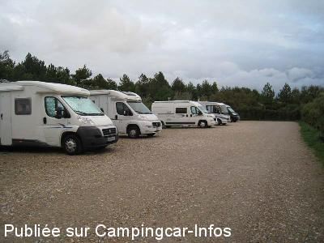
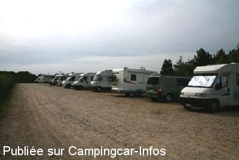

APN = Parking toléré jour/nuit de :
CAYEUX SUR MER
(N° 411)
Accès/adresse :
Route Blanche
Pointe du Hourdel
80410 CAYEUX SUR MER
Pointe du Hourdel
80410 CAYEUX SUR MER
Latitude : (Nord) 50.21498° Décimaux ou 50° 12′ 53′′
Longitude : (Est) 1.55325° Décimaux ou 1° 33′ 11′′
Tarif : Gratuit
Services :

Restaurant
Autres informations :
Grand parking
Vue sublime sur la baie de Somme avec les phoques

Le 11/10/2015 par Marmotte57

Le 04/05/2010 par Paul Guntz
de
Fred Martin
le 10/02/2016 :
Aire agréable et bien située.
Seuls pour la nuit en février.
Aire agréable et bien située.
Seuls pour la nuit en février.
de
guy lefevre
le 11/11/2015 :
Je suis passé le 9/ 10/2015 l 'endroit est sympa et calme nous étions une quinzaine de cc, 50 m de la mer et de la pointe
Je suis passé le 9/ 10/2015 l 'endroit est sympa et calme nous étions une quinzaine de cc, 50 m de la mer et de la pointe
de
Marmotte57
le 10/10/2015 :
Aire propre et très agréable en ce mois de septembre. Avons passé 3 nuits à cet endroit tout en visitant les environs en camping car et en y revenant le soir. Le parking était à chaque fois loin d'être plein. Très tranquille et proche de la mer. Malheureusement, les phoques, eux, étaient assez loin.
Aire propre et très agréable en ce mois de septembre. Avons passé 3 nuits à cet endroit tout en visitant les environs en camping car et en y revenant le soir. Le parking était à chaque fois loin d'être plein. Très tranquille et proche de la mer. Malheureusement, les phoques, eux, étaient assez loin.
de
Bernard Housiaux
le 24/08/2015 :
Venant de l'aire du Crotoy j'ai essayé de passer deux jours ici. Mais les mêmes commentaires que sur le Crotoy…Horrible…quelques centimètres d'écart entre chaque CC, parfois impossible d'ouvrir la Porte. Sale et plein de Crasses tout autour du Parking. Pleins de Poubelles abandonnées par les Campingcaristes. Et comme au Crotoy…La plupart des propriétaires de chiens laissent trainer leurs Crottes un peu partout. Ne vous étonnez pas si bientôt l'accès sera interdit au Campingcaristes…
Venant de l'aire du Crotoy j'ai essayé de passer deux jours ici. Mais les mêmes commentaires que sur le Crotoy…Horrible…quelques centimètres d'écart entre chaque CC, parfois impossible d'ouvrir la Porte. Sale et plein de Crasses tout autour du Parking. Pleins de Poubelles abandonnées par les Campingcaristes. Et comme au Crotoy…La plupart des propriétaires de chiens laissent trainer leurs Crottes un peu partout. Ne vous étonnez pas si bientôt l'accès sera interdit au Campingcaristes…
de
patapouf
le 21/05/2015 :
Parking gratuit nids de poule
toutefois extrêmement agréable, a 50 m de la mer, protégé du vent par de très hautes haies et d'un calme total
merci a la municipalité
comme déjà indiqué , des poubelles seraient un plus
Parking gratuit nids de poule
toutefois extrêmement agréable, a 50 m de la mer, protégé du vent par de très hautes haies et d'un calme total
merci a la municipalité
comme déjà indiqué , des poubelles seraient un plus
de
jocelyne
le 16/04/2015 :
parking trés agréable mais manque les conteneurs a poubelles
parking trés agréable mais manque les conteneurs a poubelles
de
d jean-pierre
le 06/03/2015 :
Attention, l'accès est uniquement possible par la Pointe du Hourdel, la D102 étant fermée à partir du rond-point Mollière en venant de Cayeux .
Attention, l'accès est uniquement possible par la Pointe du Hourdel, la D102 étant fermée à partir du rond-point Mollière en venant de Cayeux .
de
Phil51
le 29/09/2014 :
Bonjour,
Nous y sommes passés pour deux nuits du 27 au 29 septembre 2014 matin.
Aire très fréquentée à partager effectivement avec les voitures. Aucun service, même pas une poubelle...
Sinon endroit superbe. Nous sommes allés à Cayeux sur mer à pied et par le sentier du littorale. Très belle marche.
Endroit superbe pour les chiens.
Nous avons vu un phoque.
Endroit à conseiller.
Bonjour,
Nous y sommes passés pour deux nuits du 27 au 29 septembre 2014 matin.
Aire très fréquentée à partager effectivement avec les voitures. Aucun service, même pas une poubelle...
Sinon endroit superbe. Nous sommes allés à Cayeux sur mer à pied et par le sentier du littorale. Très belle marche.
Endroit superbe pour les chiens.
Nous avons vu un phoque.
Endroit à conseiller.
de
hidena86
le 14/09/2014 :
Le 13 septembre 2014
Très beau site , beaucoup de monde .Gratuit pour les CC.
Pas de services , pas de poubelles!!! Attention toutes les places des VL sont payantes .... sauf les places de camping-cars , donc les voitures squattent le parking des cc . Ce site vaut le détour.
Le 13 septembre 2014
Très beau site , beaucoup de monde .Gratuit pour les CC.
Pas de services , pas de poubelles!!! Attention toutes les places des VL sont payantes .... sauf les places de camping-cars , donc les voitures squattent le parking des cc . Ce site vaut le détour.
de
concorde890
le 02/05/2014 :
§ Effectivement, aire très fréquentée à tel point que de nombreux CC stationnent en bord de route y accédent. Par contre, ce 30/04, pas l'ombre d'un gendarme ni d'un boulanger. Dommage qu'il n'y ai pas de service.
§ Effectivement, aire très fréquentée à tel point que de nombreux CC stationnent en bord de route y accédent. Par contre, ce 30/04, pas l'ombre d'un gendarme ni d'un boulanger. Dommage qu'il n'y ai pas de service.
de
alains2025
le 01/05/2013 :
Super sympa cette aire qui plus est avec passage de la gendarmerie. Il faut arriver de bonne heure pour pouvoir trouver un emplacement. Nous y avons passé une nuit très calme du 17 au 18 avril Dommage il n'y a plus du tout de service même sur l'ancienne aire auprès du phare du Hourdel ( pas de vidange ni eau propre ). Munissez vous de jumelle pour apercevoir les phoques à marée basse. Merci à cette commune pour l'accueil des campingcaristes
Super sympa cette aire qui plus est avec passage de la gendarmerie. Il faut arriver de bonne heure pour pouvoir trouver un emplacement. Nous y avons passé une nuit très calme du 17 au 18 avril Dommage il n'y a plus du tout de service même sur l'ancienne aire auprès du phare du Hourdel ( pas de vidange ni eau propre ). Munissez vous de jumelle pour apercevoir les phoques à marée basse. Merci à cette commune pour l'accueil des campingcaristes
de
CHRISTINE
le 15/10/2012 :
§
Bonjour,
Très belle aire calme et gratuite, pas mal de monde. Le site de la pointe du Hourdel est sauvage et magnifique. Avons vu un phoque ==> génial !.
Le boulanger passe le matin
§
Bonjour,
Très belle aire calme et gratuite, pas mal de monde. Le site de la pointe du Hourdel est sauvage et magnifique. Avons vu un phoque ==> génial !.
Le boulanger passe le matin
de
vivi
le 27/08/2012 :
très bien l'aire de CAYEUX SUR MER, beaucoup de monde, il faut arriver avant 12 h 00, apportez vos jumelles si vous voulez apercevoir les phoques à marée basse.
En effet, les gendarmes font des rondes jour et nuit. Je vous recommande sans problème cette aire.
très bien l'aire de CAYEUX SUR MER, beaucoup de monde, il faut arriver avant 12 h 00, apportez vos jumelles si vous voulez apercevoir les phoques à marée basse.
En effet, les gendarmes font des rondes jour et nuit. Je vous recommande sans problème cette aire.
de
Jean
le 05/06/2011 :
Nous y avons passé 2 nuits fin mai. Malheureusement, le 2ème soir, arrivée de plusieurs camionnettes avec des gens sans gêne, musique à fond, passage de la police à plusieurs reprises. Plusieurs CC ont quitté le site. Dommage, car aire très agréable.
Nous y avons passé 2 nuits fin mai. Malheureusement, le 2ème soir, arrivée de plusieurs camionnettes avec des gens sans gêne, musique à fond, passage de la police à plusieurs reprises. Plusieurs CC ont quitté le site. Dommage, car aire très agréable.
de
Papyvelo
le 15/11/2009 :
En fait il y a 2 parkings : le premier juste à la pointe avec 5 places, le second à 800m sur la route blanche avec beaucoup de places, il faut aller jusqu'à la barrière qui ferme la route et l'entrèe est à gauche.
Attention, la route blanche est coupée en venant de Cayeux il faut absolument passer par le hameau du Hourdel pour atteindre ce grand parking où nous avons passé une excellente nuit.
En fait il y a 2 parkings : le premier juste à la pointe avec 5 places, le second à 800m sur la route blanche avec beaucoup de places, il faut aller jusqu'à la barrière qui ferme la route et l'entrèe est à gauche.
Attention, la route blanche est coupée en venant de Cayeux il faut absolument passer par le hameau du Hourdel pour atteindre ce grand parking où nous avons passé une excellente nuit.